실내건축기사(구) (2020-08-22 기출문제)
1과목: 실내디자인론
1. 사무소 공간 구성 중 아트리움(atrium)에 관한 설명으로 옳지 않은 것은?
- 실내 조경을 통해 자연 요소의 도입이 가능하다.
- 빛 환경의 관점에서 전력 에너지의 절약이 이루어진다.
- 개방형 업무공간으로 작업중심의 레이아웃으로 구성된다.
- 내부 공간의 긴장감을 이완시키는 지각적 카타르시스가 가능하다.
(정답률: 73%)

2. 의자 및 소파에 관한 설명으로 옳지 않은 것은?
- 카우치(couch)는 몸을 기댈 수 있도록 좌판의 한쪽 끝이 올라간 형태를 갖는다.
- 체스터필드(chesterfield)는 쿠션성이 좋도록 솜, 스폰지 등을 채워 넣은 소파이다.
- 풀업 체어(pull-up chair)는 필요에 따라 이동시켜 사용할 수 있는 간이의자로 가벼운 느낌의 형태를 갖는다.
- 세티(settee)는 몸을 축 늘여 쉰다는 의미를 가진 소파로 머리와 어깨부분을 받칠 수 있도록 한쪽 부분이 경사져 있다.
(정답률: 67%)
3. 상점의 판매형식 중 대면판매에 관한 설명으로 옳지 않은 것은?
- 포장대나 계산대를 별도로 둘 필요가 없다.
- 귀금속과 같은 소형 고가품 판매점에 적합하다.
- 고객과 마주 대하기 때문에 상품 설명이 용이하다.
- 진열된 상품을 자유롭게 직접 접촉하므로 선택이 용이하다.
(정답률: 74%)
4. 상품의 유효진열 범위 내에서 고객의 시선이 편하게 머물고 손으로 잡기에도 가장 편안한 높이인 골든 스페이스의 범위로 알맞은 것은?
- 450 ~ 850mm
- 850 ~ 1250mm
- 1300 ~ 1500mm
- 1500 ~ 1700mm
(정답률: 91%)
5. 디자인 요소 중 점에 관한 설명으로 옳지 않은 것은?
- 기하학적으로 크기가 없고 위치만 존재한다.
- 어떤 형상을 규정하거나 한정하고, 면적을 분할한다.
- 선의 교차, 선의 굴절, 면과 선의 교차에서 나타난다.
- 면 또는 공간에 하나의 점이 놓이면 주의력이 집중되는 효과가 있다.
(정답률: 85%)
6. VMD(visual merchandising)에 관한 설명으로 옳지 않은 것은?
- 쇼윈도우와 VP는 하나의 통일성 있는 방법으로 상점 정책에 맞게 표현되도록 한다.
- 다른 상점과 차별화하여 상업공간을 아름답고 개성있게 하는 것도 VMD의 기본 전개방법이다.
- VMD의 구성요소 중 VP는 점포의 주장을 강하게 표현하며 IP는 구매시점상에 상품 정보를 설명한다.
- 상점의 영업방침을 기본으로 고객의 시각에 비치는 파사드만을 상점의 개성에 따라 통일 된 이미지를 만들어 전개한다.
(정답률: 82%)
7. 사무소의 실단위 계획 중 개방식 배치에 관한 설명으로 옳지 않은 것은?
- 커뮤니케이션에 융통성이 있다.
- 개인 업무 공간의 독립성이 좋아진다.
- 모든 면적을 유용하게 이용할 수 있다.
- 실의 길이나 깊이에 변화를 줄 수 있다.
(정답률: 85%)
8. 실내공간 구성요소 중 바닥에 관한 설명으로 옳지 않은 것은?
- 바닥차가 없는 경우 색, 질감, 재료 등으로 공간의 변화를 줄 수 있다.
- 신체와 직접 접촉되는 요소로서 촉각적인 만족감을 중요시 해야 한다.
- 상승된 바닥면은 공간의 흐름이 연속되고 주위 공간과 연계성이 강조된다.
- 다른 요소들이 시대와 양식에 의한 변화가 현저한데 비해 매우 고정적이다.
(정답률: 60%)
9. 의자와 디자이너의 연결이 옳지 않은 것은?
- 파이미오 의자 – 알바 알토
- 레드 블루 의자 – 미하엘 토넷
- 체스카 의자 – 마르셀 브로이어
- 힐 하우스 레더백 의자 – 찰스 레니 매킨토시
(정답률: 68%)
10. 다음 설명에 알맞은 문의 종류는?
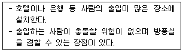
- 주름문
- 회전문
- 여닫이문
- 미서기문
(정답률: 90%)
11. 다음 중 좋은 실내디자인을 판단하는 척도로서 우선 순위가 가장 낮은 것은?
- 유행성
- 기능성
- 심미성
- 경제성
(정답률: 82%)
12. 가구를 인체공학적 입장에서 분류하였을 경우에 관한 설명으로 옳지 않은 것은?
- 침대는 인체계 가구이다.
- 책상은 준인체계 가구이다.
- 수납장은 준인체계 가구이다.
- 작업용 의자는 인체계 가구이다.
(정답률: 54%)
13. 다음 중 리듬의 효과를 위해 사용되는 요소와 가장 거리가 먼 것은?
- 반복
- 강조
- 방사
- 점이
(정답률: 64%)
14. 디자인 원리 중 통일에 관한 설명으로 가장 알맞은 것은?
- 대립, 변이, 점층 등의 방법이 사용된다.
- 상반된 성격의 결합으로 극적인 분위기를 조성한다.
- 규칙적인 요소들의 반복으로 시각적인 질서를 이루게 한다.
- 각각 다른 구성요소들이 전체로서 동일한 이미지를 이루게 한다.
(정답률: 67%)
15. 다음 설명에 알맞은 주택 부엌의 유형은?
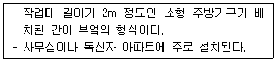
- 키친네트
- 오픈 키친
- 독립형 부엌
- 다용도 부엌
(정답률: 63%)
16. 건축화조명 중 코브(cove) 조명에 관한 설명으로 옳은 것은?
- 광원을 넓은 면적의 벽면에 매입하여 비스타(vista)적인 효과를 낼 수 있다.
- 벽면의 상부에 위치하여 모든 빛이 아래로 직사하도록 하는 직접조명방식이다.
- 천장, 벽의 구조체에 의해 광원의 빛이 천장 또는 벽면으로 가려지게 하여 반사광으로 간접 조명하는 방식이다.
- 건축구조체로 천장에 조명기구를 설치하고 그 밑에 루버나 유리, 플라스틱 같은 확산 투과판으로 천장을 마감처리하여 설치하는 조명방식이다.
(정답률: 72%)
17. 형태(form)의 지각심리에 관한 설명으로 옳지 않은 것은?
- 연속성은 유사배열로 구성된 형들이 연속되어 보이는 하나의 그룹으로 지각되는 법칙이다.
- 반전도형(反轉圖形)은 루빈의 항아리로 설명되며, 배경과 도형이 동시에 지각되는 법칙이다.
- 유사성은 비슷한 형태, 색채, 규모, 질감, 명암, 패턴의 그룹을 하나의 그룹으로 지각하려는 경향을 말한다.
- 폐쇄성은 불완전한 형이나 그룹을 폐쇄하거나 완전한 하나의 형, 혹은 그룹으로 완성하여 지각되는 법칙을 말한다.
(정답률: 63%)
18. 강연, 콘서트, 독주, 연극공연 등에 가장 많이 사용되며, 연기자가 일정한 방향으로만 관객을 대하는 극장의 평면형은?
- 애리나(arena)형
- 프로시니엄(proscenium)형
- 오픈 스테이지(open stage)형
- 센트럴 스테이지(central stage)형
(정답률: 57%)
19. 단독주택의 현관에 관한 설명으로 옳지 않은 것은?
- 거실, 계단, 공용 화장실과 가까이 위치하는 것이 좋다.
- 거실의 일부를 현관으로 만드는 것은 피하도록 한다.
- 현관의 위치는 도로의 위치와 대지의 형태에 영향을 받는다.
- 주택 측면에 현관을 배치한 경우 동선처리가 편리하고 복도 길이 단축에 유리하다.
(정답률: 77%)
20. 공사 완료 후 디자인 책임자가 시공이 설계에 따라 성공적으로 진행되었는지의 여부를 확인할 수 있는 것은?
- 계약서
- 시방서
- 공정표
- 감리보고서
(정답률: 82%)
2과목: 색채학
21. 저드(D.B.Judd)의 색채 조화론에서 ‘친근성의 원리’를 옳게 설명한 것은?
- 공통점이나 속성이 비슷한 색은 조화된다.
- 자연계의 색으로 쉽게 접하는 색은 조화된다.
- 규칙적으로 선택된 색들끼리 잘 조화된다.
- 색의 속성차이가 분명할 때 조화된다.
(정답률: 67%)
22. 색채가 매체, 주변 색, 광원, 조도 등이 서로 다른 환경에서 관찰될 때 다르게 보이는 현상은?
- 색영역 맵핑(color gamut mapping)
- 컬러 어피어런스(color appearance)
- 메타머리즘(metamerism)
- 디바이스 조정(device calibration)
(정답률: 59%)
23. 색의 시각적 특성에 대한 설명 중 옳은 것은?
- 난색계는 한색계보다 후퇴해 보인다.
- 배경색과 명도차가 적은 어두운 색은 진출해 보인다.
- 저채도의 배경색에 고채도의 색은 후퇴해 보인다.
- 고명도, 고채도의 색은 진출해 보인다.
(정답률: 83%)
24. 디지털 기기의 색 공간 변환 목적으로 틀린 것은?
- 디지털 컬러를 처리하는 장비들 사이의 컬러영역을 분리시키기 위함
- 영상처리 과정에서 분할, 특징추출, 복원, 향상 등을 정확하게 수행하기 위함
- 영상물 제작 과정에서 합성, 수정, 보완 등을 정확하고 용이하게 수행하기 위함
- 컴퓨터 그래픽스에서 렌더링, 특수효과 처리, 실사 영상과 CG영상의 합성 등을 정확하고 용이하게 수행하기 위함
(정답률: 68%)
25. 다음 중 ‘박하색’과 관련이 없는 것은?
- Mint
- 2.5PB 9/2
- 흰 파랑
- Indigo blue
(정답률: 81%)
26. 색과 색의 관계가 가까워져 색의 차이를 좁히는 현상은?
- 잔상
- 리프만 효과
- 동화현상
- 푸르킨예현상
(정답률: 78%)
27. 감법혼색에 대한 설명으로 틀린 것은?
- magenta + yellow = red
- cyan + magenta = blue
- yellow + cyan = green
- yellow + blue = white
(정답률: 82%)
28. 청색에 흰색물감을 혼합하였을 때의 변화로 옳은 것은?
- 청색보다 명도, 채도 모두 높아졌다.
- 청색보다 명도는 높아졌고 채도는 낮아졌다.
- 청색보다 명도는 낮아졌고 채도는 높아졌다.
- 청색보다 명도, 채도 모두 낮아졌다.
(정답률: 74%)
29. 먼셀 색체계의 5가지 기본 색상으로 틀린 것은?
- R
- Y
- G
- C
(정답률: 79%)
30. 파란색의 감정효과에 가장 근접한 것은?
- 흥분되는 색이다.
- 혁명을 나타낸다.
- 냉담, 내정의 색이다.
- 자연, 평범, 안일 등을 상징한다.
(정답률: 76%)
31. 비누거품이나 수면에 뜬 기름, 전복껍질 등에서 무지개색 처럼 나타나는 색은?
- 표면색
- 조명색
- 형광색
- 간섭색
(정답률: 75%)
32. 파버 비렌(Faber Birren)의 색채조화론 중 순색과 흰색의 조화로 이루어지는 용어는?
- TINT
- SHADE
- TONE
- GRAY
(정답률: 69%)
33. 먼셀 색입체에 관한 설명 중 틀린 것은?
- 색상은 명도 축을 중심으로 원주상에 구성되어 있다.
- 명도는 직선적으로 변한다.
- 채도는 수명선으로 배열된다.
- 명도는 위로 올라갈수록, 채도는 색입체의 중심에 가까울수록 증가한다.
(정답률: 69%)
34. 오스트발트 색체계의 색표기 방법인 ‘8pa’중 ‘p’가 의미하는 것은?
- 색상기호
- 흑색량
- 백색량
- 순색량
(정답률: 67%)
35. 파일을 관리하고 운용하기 위한 내용들 중 틀린 것은?
- 1200dpi에서 행해진 스캔과 더 높은 해상도인 2400dpi 사이의 시각적 차이는 크다.
- 스캐닝 해상도들이 전통적인 스크린 방식과 일치할 때 확률통계학적 스크리닝 품질은 전통적인 스크리닝과 양립할 수 있다.
- 색역이 일정한 출력 도구들은 일반적으로 스캐닝 해상도가 출력 도구의 해상도와 같을 때 최상의 결과물을 제공한다.
- 파일의 크기는 입력과 출력의 크기보다 해상도에 의해 조정된다.
(정답률: 48%)
36. 인접색의 조화에 가장 가까운 배색은?
- 연두 – 보라 - 빨강
- 주황 – 청록 - 자주
- 빨강 – 파랑 - 노랑
- 자주 – 보라 – 남색
(정답률: 85%)
37. 모니터의 색온도에 관한 설명으로 틀린 것은?
- 색온도의 단위는 K(Kelvin)를 사용하고, 사용자가 임의로 모니터의 색온도를 설정할 수 있다.
- 모니터의 색온도가 높아지면 전반적으로 불그스레한 느낌을 준다.
- 자연에 가까운 색을 구현하기 위해서는 모니터의 색온도를 6500K로 설정하는 것이 좋다.
- 모니터의 색온도가 9300K로 설정되면 흰색이나 회색계열의 색들은 청색이나 녹색조의 색을 띈다.
(정답률: 64%)
38. 다음 중 가장 짧은 파장의 빛은?
- 녹색
- 파랑
- 빨강
- 노랑
(정답률: 77%)
39. 다음 중 색의 채도가 가장 높은 색상은?
- 5R 4/14
- 5G 5/8
- 5B 6/6
- 5P 3/10
(정답률: 78%)
40. 오스트발트 색체계에 대한 설명으로 틀린 것은?
- B에서 W방향으로 a, c, e, g, i, l, n, p로 나누어 표기한다.
- 등색상 삼각형에서 BC와 평행선상에 있는 색들은 백색량이 같은 색계열이다.
- 등색상 삼각형에서 WB와 평행선상에 있는 색들은 순색량이 같은 색계열이다.
- 순색량(C)+백색량(W)+흑색량(B)=100%가 되는 3색 혼합에 의하여 물체색을 체계화하였다.
(정답률: 59%)
3과목: 인간공학
41. 다음 중 simo chart(simultaneous motion cycle chart)와 가장 관련이 있는 것은?
- micro motion study
- motion time analysis
- memo motion analysis
- basic motion time study
(정답률: 40%)
42. 다음 커서(cursor) 위치조정 장치 중 속도가 가장 빠른 것은?
- 키보드
- 트랙볼
- 조이스틱
- 터치스크린
(정답률: 75%)
43. 근육의 대사 작용에서 근육 피로의 원인이 되는 물질은?
- 젖산
- 단백질
- 포도당
- 글리코겐
(정답률: 81%)
44. 고온의 작업환경에서 인체의 반응으로 가장 거리가 먼 것은?
- 체표면의 증가
- 피부혈관의 확장
- 체내의 염분 손실
- 근육의 긴장과 떨림
(정답률: 75%)
45. 영상표시단말기(VDT)를 취급하는 근로자에게 사업주가 제공해야하는 키보드의 경사 범위로 옳은 것은?
- 5 ~ 15°
- 5 ~ 45°
- 10 ~ 35°
- 10 ~ 45°
(정답률: 74%)
46. 소리(sound)의 특징에 대한 설명으로 옳지 않은 것은?
- 소리를 끈 뒤에도 실내에 남아잇는 잔향이 있다.
- 음의 열에너지가 진동에너지로 변화하는 흡음감쇄현상이 있다.
- 진동수가 조금씩 다른 두 소리가 간섭되어 일정한 합성파를 만드는 현상이 있다.
- 소리가 흡수될 때 굴절현상이 생기며, 소리가 굴절되어도 진동수는 변하지 않는다.
(정답률: 39%)
47. 인체 계측치를 응용할 때 주의할 점으로 적합하지 않은 것은?
- 사람은 항상 움직이므로 여유 있는 치수를 설정해야 한다.
- 일반적으로 신체 각 부위의 너비와 두꼐는 체중과 반비례 관계이다.
- 모든 신체치수가 평균치에 속하는 사람이 매우 적음을 유의해야 한다.
- 조절식 또는 극단치의 적용이 부적절한 경우에는 평균치를 기준으로 설계한다.
(정답률: 73%)
48. 생체리듬에 관한 설명으로 옳지 않은 것은?
- 위험일은 각각의 리듬이 (-)에서 (+)로, 또는 (+)에서 (-)로 변화하는 점을 말한다.
- 육체적 리듬(Physical rhythm)은 식욕, 소화력, 활동력, 스태미나 및 지구력과 밀접한 관계가 있다.
- 지성적 리듬(Intellectual rhythm)은 상상력, 사고력, 기억력, 의지 판단 및 비판력과 밀접한 관계가 있다.
- 감성적 리듬(Sensitivity rhythm)은 33일의 주기로 반복하며, 주의력, 창조력, 예감 및 통찰력 등을 좌우한다.
(정답률: 68%)
49. 근력(strength)에 관한 설명으로 옳지 않은 것은?
- 근력은 일반적으로 등척적으로 근육이 낼 수 있는 최대 힘을 의미한다.
- 근력은 힘의 발휘조건에 따라 정적 근력과 동적 근력의 두 가지 유형으로 구분될 수 있다.
- 동적 근력을 등척력이라 하며, 정지된 상태에서 움직이기 시작할 때의 힘을 의미한다.
- 동적 근력의 측정이 어려운 것은 가속, 관절 각도의 변화 등이 측정에 영향을 미치기 때문이다.
(정답률: 69%)
50. 시각(표적세부의 대각)의 측정공식으로 옳은 것은? (단, L은 시선과 직각으로 측정한 물체크기, D는 물체와 눈 사이의 거리이고, 57.3과 60은 시각이 600분 이하일 때, 라디안(radian) 단위를 분으로 환산하기 위한 상수이다.)
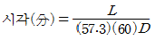
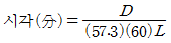
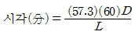
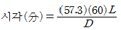
(정답률: 41%)
51. 입체를 지각하도록 하는 암시(cue)가 아닌 것은?
- 소실점
- 색수차
- 그림자
- 양안시차
(정답률: 56%)
52. 문자의 바탕과 대비에서 흰 바탕에 검은 글씨를 쓸 경우 글자의 높이에 대한 가장 알맞은 획의 굵기 비율은?
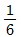
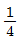
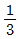
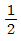
(정답률: 49%)
53. 전신 진동이 성능(performance)에 끼치는 영향이 가장 작은 것은?
- 시력의 손상
- 청력의 손상
- 추적능력의 저하
- 정확한 근육조절 능력의 저하
(정답률: 61%)
54. 피부로 느낄 수 있는 감각 중 감수성이 가장 높은 것은?
- 냉각
- 압각
- 온각
- 통각
(정답률: 76%)
55. 두 개의 물체를 적당한 위치에서 서로 교대로 제시하면 물체가 그 공간에서 움직이는 것처럼 느껴지는 현상은?
- 잔상(afterimage)
- 착시(optical illusion)
- 가현 운동(apparent movement)
- 단일상과 이중상(single & double image)
(정답률: 64%)
56. 인간 – 기계 인터페이스를 좌우하는 사용환경 요인으로만 나열된 것은?
- 연령, 성별, 학력
- 온도, 습도, 조명
- 생활습관, 언어, 생활양식
- 문화의 성숙도, 시대상황, 유행
(정답률: 55%)
57. 간판의 바탕색이 80%의 반사도를 가지며, 글씨가 10%의 반사도를 가질 때 대비(contrast)는 약 몇%인가?
- 77.8
- 85.7
- 87.5
- 89.9
(정답률: 52%)
58. 정보 입력 시 청각장치보다 시각장치를 이용하는 것이 더 유리한 경우는?
- 정보의 내용이 복잡한 경우
- 수신자가 자주 이동하는 경우
- 수신 장소가 너무 밝거나 어두울 경우
- 정보의 내용이 즉각적인 행동을 요구하는 경우
(정답률: 76%)
59. 조명을 설계할 때 고려해야 할 사항으로 옳지 않은 것은?
- 작업 부분과 배경 사이에 콘트라스트(대비)가 있어서는 안 된다.
- 작업면은 작업의 종류에 따라 적당한 밝기로 일정하게 비추어야 한다.
- 광원에 의한 직사 눈부심은 휘도를 줄이거나 광원을 시선에서 멀리 위치시킨다.
- 일반적으로는 전반조명 또는 간접조명을 적용하여 눈의 피로를 줄이도록 한다.
(정답률: 74%)
60. 제품개념의 설정 시 반드시 고려해야 하는 사항이 아닌 것은?
- 사용자(user)
- 사용목적(task)
- 스타일(style)
- 사용환경(context)
(정답률: 83%)
4과목: 건축재료
61. 금속재료에 관한 설명으로 옳지 않은 것은?
- 스테인리스강은 내화, 내열성이 크며, 녹이 잘 슬지 않는다.
- 동은 화장실 주위와 같이 암모니아가 있는 장소에서는 빨리 부식하기 때문에 주의해야 한다.
- 알루미늄은 콘크리트에 접할 경우 부식되기 쉬우므로 주의하여야 한다.
- 청동은 구리와 아연을 주체로 한 합금으로 건축장식철물 또는 미술공예 재료에 사용된다.
(정답률: 55%)
62. 석재 갈기의 공정 중 일반적으로 광택기구를 사용하여 광내기를 처리하는 공정은?
- 거친갈기
- 물갈기
- 본갈기
- 정갈기
(정답률: 47%)
63. 아스팔트방수에서 아스팔트 방수층과 콘크리트 바탕과의 접착을 좋게 하기 위하여 도포하는 재료는?
- 스트레이트 아스팔트
- 블로운 아스팔트
- 아스팔트 프라이머
- 아스팔트 컴파운드
(정답률: 80%)
64. 점토제품 시공 후 발생하는 백화에 관한 설명으로 옳지 않은 것은?
- 타일 등의 시유소성한 제품은 시멘트 중의 경화체가 백화의 주된 요인이 된다.
- 작업성이 나쁠수록 모르타르의 수밀성이 저하되어 투수성이 커지게 되고, 투수성이 커지면 백화 발생이 커지게 된다.
- 점토제품의 흡수율이 크면 모르타르 중의 함유수를 흡수하여 백화 발생을 억제한다.
- 모르타르의 물시멘트비가 크게 되면 잉여수가 증대되고, 이 잉여수가 증발할 때 가용 성분의 용출을 발생시켜 백화 발생의 원인이 된다.
(정답률: 56%)
65. 그림과 같은 나무의 무게가 14kg이다. 이 나무의 함수율은? (단, 나무의 절건비중은 0.5이다.)
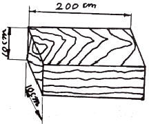
- 30%
- 40%
- 50%
- 60%
(정답률: 45%)
66. 합성수지와 체질안료를 혼합한 입체무늬 모양을 내는 뿜칠용 도료로 콘크리트 및 모르타르 바탕에 도장하는 도료는?
- 본타일
- 다채무늬 도료
- 규산염 도료
- 알루미늄 도료
(정답률: 45%)
67. 플라이애시가 콘크리트에 미치는 작용에 관한 설명으로 옳지 않은 것은?
- 입자가 구형이므로 유동성이 증가되어 콘크리트의 워커빌리티가 개선된다.
- 플라이애시의 치환율이 증가하면 콘크리트의 초기강도가 증가한다.
- 수산화칼슘과 반응함에 따라 알칼리성을 감소시켜, 저알칼리 시멘트의 효과를 나타낸다.
- 알칼리골재반응에 의한 팽창을 억제하고, 해수중의 황산염에 대한 저항성을 높인다.
(정답률: 41%)
68. 다음 중 회반죽 바름용 재료와 관련 없는 것은?
- 종석
- 해초풀
- 여물
- 소석회
(정답률: 65%)
69. 콘크리트의 건조수축에 관한 설명으로 옳지 않은 것은?
- 골재로서 사암이나 점판암을 이용한 콘크리트는 수축량이 크고, 석영·석회암·화강암을 이용한 것은 적다.
- 콘크리트 습윤양생기간의 장단은 건조수축에 그다지 큰 영향을 주지 않는다.
- 골재 중에 포함된 미립분이나 점토, 실트는 일반적으로 건조수축을 증대시킨다.
- 단위수량이 증가되면 수축량은 감소한다.
(정답률: 44%)
70. 다음 목재의 강도 중 가장 큰 것은?
- 응력방향이 섬유방향에 평행한 경우의 압축강도
- 응력방향이 섬유방향에 평행한 경우의 인장강도
- 응력방향이 섬유방향에 평행한 경우의 전단강도
- 응력방향이 섬유방향에 직각인 경우의 압축강도
(정답률: 62%)
71. 콘크리트용 잔골재의 단위용적질량이 1.5kg/ℓ이고 절건밀도가 2.7g/cm3일 때 잔골재의 공극률은 약 얼마인가?
- 24%
- 34%
- 44%
- 54%
(정답률: 38%)
72. 내화벽돌로 인정받기 위하여 필요한 내화도(SK)의 기준은 최소 얼마 이상인가? (단, 내화벽돌의 종류별 등급 중 7종 기준)
- SK 20 이상
- SK 26 이상
- SK 30 이상
- SK 34 이상
(정답률: 63%)
73. 플라스틱 재료의 열적 성질에 관한 설명으로 옳지 않은 것은?
- 내열온도는 일반적으로 열경화성수지가 열가소성수지보다 크다.
- 열에 의한 팽창 및 수축이 크다.
- 실리콘수지는 열변형온도가 150℃정도이며, 내열성이 낮다.
- 가열을 심하게 하면 분자간의 재결합이 불가능하여 강도가 현저하게 저하되는 현상이 발생한다.
(정답률: 68%)
74. 유리의 일반적 성질에 관한 설명으로 옳지 않은 것은?
- 청결한 창유리의 흡수율은 2~6%이나 두께가 두꺼울수록 또는 불순물이 많고 착색이 진할수록 크게 된다.
- 일반적으로 열전도율 및 팽창계수는 크고 비열은 적으므로, 부분적으로 급히 가열하거나 냉각해도 쉽게 파괴되지 않는다.
- 창유리 등의 소다석회유리의 비중은 약 2.5로 석영보다 약간 가볍다.
- 전기에 대해서는 건조상태에서 부도체이나 공중의 습도가 많게 되면 유리 표면에 습기가 흡착되므로 절연성이 적어진다.
(정답률: 64%)
75. 발포제로써 보드상으로 성형하여 단열재로 널리 사용되며 천장재, 전기용품 등에도 쓰이는 열가소성 수지는?
- 불포화폴리에스테르수지
- 실리콘수지
- 아크릴수지
- 폴리스티렌수지
(정답률: 46%)
76. 건축 구조재료의 요구성능을 역학적 성능, 화학적 성능, 내화성능 등으로 구분할 때 다음 중 역학적 성능에 해당되지 않는 것은?
- 내열성
- 강도
- 강성
- 내피로성
(정답률: 57%)
77. 매스콘크리트에서 발생하는 균열의 제어방법이 아닌 것은?
- 고발열성 시멘트를 사용한다.
- 파이프 쿨링을 실시한다.
- 포졸란계 혼화재를 사용한다.
- 온도균열지수에 의한 균열발생을 검토한다.
(정답률: 65%)
78. 트래버틴(travertine)에 관한 설명으로 옳지 않은 것은?
- 석질이 불균일하고 다공질이다.
- 변성암으로 황갈색의 반문이 있다.
- 탄산석회를 포함한 물에서 침전, 생성된 것이다.
- 특수 외장용 장식재로써 주로 사용된다.
(정답률: 43%)
79. 알루미늄의 성질에 관한 설명으로 옳지 않은 것은?
- 알루미늄은 비중이 철의 1/3 정도로 경량인 반면, 열·전기전도성이 크고 반사율이 높다.
- 알루미늄의 내식성은 그 표면에 치밀한 산화피막을 형성하기 때문에 부식이 쉽게 일어나지 않으며 알칼리나 해수에도 강하다.
- 알루미늄의 부식률은 대기 중의 습도와 염분함유량, 불순물의 양과 질 등에 관계된다.
- 알루미늄은 상온에서 판, 선으로 압연가공하면 경도와 인장강도가 증가하고 연신율이 감소한다.
(정답률: 66%)
80. 강재의 항복비를 옳게 나타낸 것은?
- 탄성한도/인장강도
- 인장강도/탄성한도
- 인장강도/항복점
- 항복점/인장강도
(정답률: 46%)
5과목: 건축일반
81. 무늬없이 부재 전체를 녹색 계열로 칠한 가장 단순한 단청은?
- 모로단청
- 긋기단청
- 가칠단청
- 금단청
(정답률: 56%)
82. 철골철근콘크리트 보(SRC보)에 관한 설명으로 옳지 않은 것은?
- 철골보의 둘레에 철근을 배열시켜 콘크리트를 채워 넣은 것이다.
- 내화성능이 우수한 편이다.
- 콘크리트 타설 시 밀실하게 충전되어야 한다.
- 철골의 인성이 감소되어 좌굴현상이 생기는 단점이 있다.
(정답률: 68%)
83. 특급 소방안전관리대상물의 관계인이 소방안전관리자를 선임하는 기준으로 틀린 것은?
- 소방기술사의 자격이 있는 사람
- 소방청장이 실시하는 특급 소방안전관리 대상물의 소방안전관리에 관한 시험에 합격한 사람
- 소방공무원으로 15년 이상 근무한 경력이 있는 사람
- 소방설비기사의 자격을 취득한 후 5년 이상 1급 소방안전관리대상물의 소방안전관리자로 근무한 실무경력이 있는 사람
(정답률: 77%)
84. 소방시설 중 ‘소화설비’의 종류에 해당되지 않는 것은?
- 자동화재속보설비
- 스프링클러설비
- 자동소화장치
- 옥내소화전설비
(정답률: 77%)
85. 무창층의 정의와 관련한 아래 내용에서 밑줄 친 부분에 해당하는 기준 내용이 틀린 것은?
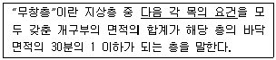
- 크기는 지름 50cm 이상의 원이 내접할 수 있는 크기일 것
- 해당 층의 바닥면으로부터 개구부 밑부분까지의 높이가 1.2m 이내일 것
- 도로 또는 차량이 진입할 수 있는 빈터를 향할 것
- 내부 또는 외부에서 쉽게 부수거나 열 수 없는 고정창일 것
(정답률: 68%)
86. 방화구조가 되기 위한 기준으로 옳지 않은 것은?
- 철망모르타르로서 그 바름두께가 1.5cm이상인 것
- 석고판 위에 시멘트모르타르 또는 회반죽을 바른 것으로서 그 두께의 합계가 2.5cm 이상인 것
- 심벽에 흙으로 맞벽치기한 것
- 시멘트모르타르 위에 타일을 붙인 것으로서 그 두께의 합계가 2.5cm 이상인 것
(정답률: 56%)
87. 바로크 건축에 관한 설명으로 옳지 않은 것은?
- 바로크의 어원은 포르투갈어로 일그러진 진주라는 뜻으로 부정적인 의미를 가지고 있다.
- 르네상스에 비해 건축의 규모가 커지고 곡면 형태에 바탕을 두어 새로운 평면형식과 공간을 창조하였다.
- 강렬한 극적 효과를 추구하였다.
- 비례와 균형을 중시한 건축 사조이다.
(정답률: 47%)
88. 방염대상물품의 방염성능기준으로 틀린 것은? (단, 소방청장이 정하여 고시하는 경우는 고려하지 않는다.)
- 탄화한 면적은 50cm2이내, 탄화한 길이는 20cm 이내일 것
- 버너의 불꽃을 제거한 때부터 불꽃을 올리지 아니하고 연소하는 상태가 그칠때까지 시간은 30초 이내일 것
- 버너의 불꽃을 제거한 때부터 불꽃을 올리며 연소하는 상태가 그칠 때까지 시간은 20초 이내일 것
- 불꽃에 의하여 완전히 녹을 때까지 불꽃의 접촉 횟수는 2회 이상일 것
(정답률: 69%)
89. 화재예방, 소방시설 설치·유지 및 안전관리에 관한 법령에 따라 원칙적으로 화재안전정책에 관한 기본계획을 계획 시행 전년도 8월 31일까지 관계 중앙행정기관의 장과 협의를 거쳐 계획 시행 전년도 9월 30일까지 수립하여야 하는 자는?
- 소방청장
- 시·도지사
- 소방서장
- 국무총리
(정답률: 74%)
90. 건축물의 바깥쪽으로의 출구로 쓰이는 문을 안여닫이로 하여서는 안되는 건축물에 속하지 않는 것은?
- 장례식장
- 종교시설
- 문화 및 집회시설 중 전시장
- 문화 및 집회시설 중 공연장
(정답률: 50%)
91. 국토교통부령으로 정하는 기준에 따라 채광을 위하여 거실에 설치하는 창문등의 면적기준으로 옳은 것은? (단, 단독주택 및 공동주택의 거실인 경우)
- 거실 바닥면적의 5분의 1 이상
- 거실 바닥면적의 10분의 1 이상
- 거실 바닥면적의 15분의 1 이상
- 거실 바닥면적의 20분의 1 이상
(정답률: 71%)
92. 총 층수가 1층인 목구조 건축물에서 일반적으로 사용되지 않는 부재는?
- 토대
- 통재기둥
- 멍에
- 중도리
(정답률: 54%)
93. 특정소방대상물에 사용하는 방염대상물품에 해당되지 않는 것은? (단, 제조 또는 가공 공정에서 방염처리를 한 물품이다.)
- 카펫
- 전시용 합판
- 종이 벽지
- 암막
(정답률: 75%)
94. 보강블록구조에서 내력벽의 벽량은 얼마이상으로 하여야 하는가?
- 15cm/m2
- 20cm/m2
- 25cm/m2
- 30cm/m2
(정답률: 36%)
95. 구조안전을 확인한 건축물 중 해당 건축물의 설계자로부터 구조안전의 확인서류를 받아 허가권자에게 제출하여야 하는 대상건축물의 기준으로 옳지 않은 것은?
- 층수가 2층 이상인 건축물
- 기둥과 기둥 사이의 거리가 9m 이상인 건축물
- 국가적 문화유산으로 보존할 가치가 있는 건축물로서 국토교통부령으로 정하는 것
- 처마높이가 9m 이상인 건축물
(정답률: 65%)
96. 대수선의 범위에 관한 기준으로 옳지 않은 것은?
- 내력벽을 증설 또는 해체하거나 그 벽면적을 30m2이상 수선 또는 변경하는 것
- 기둥을 증설 또는 해체하거나 세 개 이상 수선 또는 변경하는 것
- 보를 증설 또는 해체하거나 두 개 이상 수선 또는 변경하는 것
- 방화벽 또는 방화구획을 위한 바닥 또는 벽을 증설 또는 해체하거나 수선 또는 변경하는 것
(정답률: 44%)
97. 철근콘크리트 보에 관한 설명으로 옳지 않은 것은?
- 인장측에만 철근을 넣은 보를 단근보라 한다.
- 인장측 뿐 아니라 압축측에도 철근을 배근한 보를 복근보라 한다.
- 단순보에 작용하는 전단력은 중앙부에서 양단부로 갈수록 크다.
- 내민보는 단면 하부에 인장근을 배근한다.
(정답률: 32%)
98. 25층의 병원을 건축하는 경우에 6층 이상의 거실면적의 합계가 20000m2라고 한다면 최소 몇 대 이상의 승용승강기를 설치하여야 하는가? (단, 8인승 승용승강기이다.)
- 9대
- 10대
- 11대
- 12대
(정답률: 36%)
99. 공동주택의 난방설비를 개별난방방식으로 하는 경우에 관한 기준으로 옳지 않은 것은?
- 보일러를 설치하는 곳과 거실사이의 경계벽은 출입구를 제외하고는 내화구조의 벽으로 구획할 것
- 보일러실의 윗부분에는 그 면적이 0.3m2이상의 환기창을 설치할 것
- 보일러실의 윗부분과 아랫부분에는 각각 지름 10cm 이상의 공기흡입구 및 배기구를 항상 열려있는 상태로 바깥공기에 접하도록 설치할 것
- 보일러의 연도는 내화구조로서 공동연도로 설치할 것
(정답률: 48%)
100. 특정소방대상물의 소방시설 설치의 면제 기준과 관련한 아래의 내용에서 ( )에 들어갈 내용으로 옳은 것은?
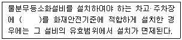
- 옥내소화전설비
- 연결송수관설비
- 자동화재탐지설비
- 스프링클러설비
(정답률: 73%)
6과목: 건축환경
101. 다음 중 평균연색평가수가 가장 낮은 광원은?
- 할로겐 램프
- 주광색 형광등
- 고압 나트륨램프
- 메탈 할라이드램프
(정답률: 66%)
102. 건물 외벽의 열관류 저항값을 높이는 방법으로 옳지 않은 것은?
- 벽체 내에 공기층을 둔다.
- 벽체에 단열재를 사용한다.
- 열전도율이 낮은 재료를 사용한다.
- 외벽의 표면 열전달율을 크게 유지한다.
(정답률: 70%)
103. 급수배관의 설계 및 시공상의 주의점에 관한 설명으로 옳지 않은 것은?
- 수평배관에는 공기나 오물이 정체하지 않도록 한다.
- 수평주관은 기울기를 주지 않고, 가능한 한 수평이 되도록 배관한다.
- 주배관에는 적당한 위치에 플랜지 이음을 하여 보수점검을 용이하게 한다.
- 음료용 급수관과 다른 용도의 배관이 크로스 커넥션(cross connection)되지 않도록 한다.
(정답률: 68%)
104. 전열의 유형에 해당하지 않는 것은?
- 전도
- 대류
- 복사
- 현열
(정답률: 60%)
1⑤. 다음 중 습공기선도에 표현되어 있지 않은 것은?
- 엔탈피
- 습고온도
- 노점온도
- 산소함유량
(정답률: 58%)
106. 다음 중 축동력이 가장 적게 소요되는 송풍기 풍량제어 방법은?
- 회전수제어
- 토출댐퍼제어
- 흡입댐퍼제어
- 흡입베인제어
(정답률: 39%)
107. 절대습도를 가장 올바르게 표현한 것은?
- 포화수증기량에 대한 백분율
- 습공기 1kg당 포함된 수증기의 질량
- 일정한 온도에서 더 이상 포함할 수 없는 수증기량
- 습공기를 구성하고 있는 건공기 1kg당 포함된 수증기의 질량
(정답률: 45%)
108. 실내외의 온도차에 의한 공기밀도의 차이가 원동력이 되는 환기 방식은?
- 중력환기
- 풍력환기
- 기계환기
- 국소환기
(정답률: 61%)
109. 배수설비의 통기관에 관한 설명으로 옳지 않은 것은?
- 배수계통 내의 배수 및 공기의 흐름을 원활히 한다.
- 배수관 계통의 환기를 도모하여 관내를 청결하게 유지한다.
- 배수관을 막히게 하는 물질을 물리적으로 분리하여 수거한다.
- 사이펀 작용 및 배압에 의해 트랩 봉수가 파괴되는 것을 방지한다.
(정답률: 62%)
110. 임의 주파수에서 벽체를 통해 입사 음 에너지의 1%가 투과하였을 때 이 주파수에서 벽체의 음투과손실은?
- 10dB
- 20dB
- 30dB
- 40dB
(정답률: 44%)
111. 다음 설명에 알맞은 보일러의 출력은?
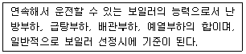
- 상용출력
- 정격출력
- 정미출력
- 과부하출력
(정답률: 50%)
112. 일조의 확보와 관련하여 공동주택의 인동간격 결정과 가장 관계가 깊은 것은?
- 춘분
- 하지
- 추분
- 동지
(정답률: 67%)
113. 겨울철 벽체의 표면결로 방지 대책으로 옳지 않은 것은?
- 실내의 환기횟수를 줄인다.
- 실내의 발생 수증기량을 줄인다.
- 벽체의 실내측 표면온도를 높인다.
- 벽체의 단열결함 부위와 열교발생 부위를 줄인다.
(정답률: 71%)
114. 다음의 옥내 급수방식 중 위생성 및 유지·관리 측면에서 가장 바람직한 방식은?
- 수도직결방식
- 압력탱크방식
- 고가탱크방식
- 펌프직송방식
(정답률: 76%)
115. 다음 설명에 알맞은 음과 관련된 현상은?
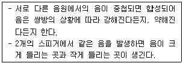
- 음의 간섭
- 음의 굴절
- 음의 반사
- 음의 회절
(정답률: 73%)
116. 일조의 직접적 효과에 속하지 않는 것은?
- 광 효과
- 열 효과
- 환기 효과
- 보건·위생적 효과
(정답률: 65%)
117. 국소식 급탕방식에 관한 설명으로 옳지 않은 것은?
- 급탕개소마다 가열기의 설치 스페이스가 필요하다.
- 급탕개소가 적은 비교적 소규모의 건물에 채용된다.
- 급탕배관의 길이가 길어 배관으로부터의 열손실이 크다.
- 용도에 따라 필요한 개소에서 필요한 온도의 탕을 비교적 간단하게 얻을 수 있다.
(정답률: 67%)
118. 잔향시간에 관한 설명으로 옳은 것은?
- 잔향시간은 일반적으로 실의 용적에 비례한다.
- 잔향시간이 짧을수록 음의 명료도가 저하된다.
- 음악을 위한 공간일수록 잔향시간이 짧아야한다.
- 평균음에너지밀도가 6dB 감소하는데 걸리는 시간을 의미한다.
(정답률: 57%)
119. 수조면의 단위면적에 입사하는 광속으로 정의되는 용어는?
- 조도
- 광도
- 휘도
- 광속발산도
(정답률: 46%)
120. 상대습도를 높였을 때 나타나는 습공기의 상태변화로 옳은 것은? (단, 건구온도는 일정하다.)
- 노점온도가 높아진다.
- 습구온도가 낮아진다.
- 절대습도가 작아진다.
- 비체적이 작아진다.
(정답률: 52%)